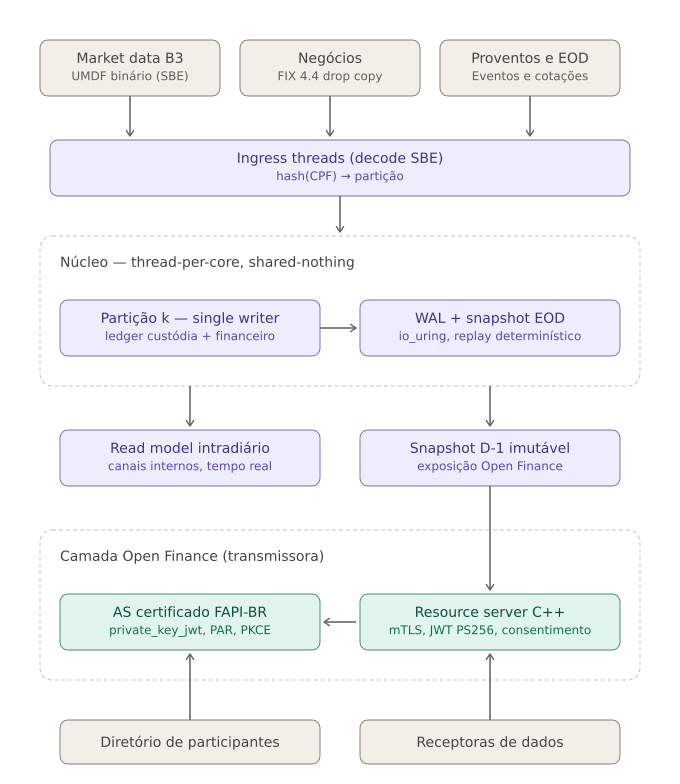

Motor de Renda Variável
Ultra-Baixa Latência em C++23
Motor determinístico de pós-negociação (clearing B3) com arquitetura shared-nothing, persistência WAL nativa via io_uring, zero alocações no hot path e borda de observabilidade Prometheus / Open Finance.
O que é o motor-rv?
Um motor de alta performance projetado para processar o ciclo completo pós-negociação de renda variável com rigor matemático e conformidade estrita com as regras da B3.
Pós-Negociação da B3
Processamento determinístico de liquidação de negócios (D+0 a D+2), compras/vendas com sinal contábil estrito, alocações de corretagem, netting multilateral, proventos em dinheiro (dividendos/JCP) e grupamentos/desdobramentos.
Integridade & Zero Ponto Flutuante
Toda aritmética financeira utiliza inteiros de ponto fixo tipados (Fixed<int64_t, 8>) com produtos em __int128. O compilador proíbe float e double em balanços através de regras estritas de compilação.
Conformidade Open Finance
Desacoplamento total entre o núcleo de trading e o mundo externo. Acesso via snapshots D-1 imutáveis em memória mapeada, garantindo conformidade com a API de Renda Variável 1.3.0 e perfis de segurança FAPI-BR.
O que está implementado hoje
Estrutura modular de engenharia em C++23 com 18 suítes de testes unitários, de integração e de caos validadas em todos os sanitizers.
| Camada / Módulo | Responsabilidade | Status |
|---|---|---|
src/base/ |
Ponto fixo, CRC32C acelerado por hardware, arenas seláveis, índices densos, anéis SPSC e métricas com histogramas log-lineares. | Completo |
src/codec/ |
Gerador próprio SBE Python (ADR-0017) e runtime zero-copy com validações de tamanho e alinhamento em tempo de compilação. | Completo |
src/core/ |
Máquina de estados, ledgers SoA de custódia e caixa com buckets vencidos, loop de partição single-writer e imagens de recuperação. | Completo |
src/wal/ |
Write-Ahead Log io_uring nativo (com fallback pwrite e injeção de falhas), coalescência de commits (100 µs) e recuperação a quente. | Completo |
src/ingress/ |
Streaming TCP de rede SBE chunked, particionador congelado por hash de CPF/CNPJ, broadcast de eventos de mercado e contrapressão. | Completo |
src/edge/ |
Borda de observabilidade: servidor HTTP/1.1 ultraleve sem alocações, exportador Prometheus 0.0.4, probes /healthz e /ready, e auditoria R17/R18. | Completo |
src/app/ |
Servidor integrado motor-rv multi-partição, simulador determinístico motor-rv-sim e inspetor forense de WAL motor-rv-wal-inspect. |
Completo |
tests/chaos/ |
Suíte de 9 testes de estresse e corrupção: cauda rasgada, CRC corrompido, salto de LSN, injeção de falha de I/O e recuperação idempotente. | 100% Verde |
Arquitetura de Alta Performance
Separação estrita de responsabilidades: o hot path do motor não aloca memória, não faz I/O síncrono e não conhece a internet.
1. Ingress & Roteamento
Os bytes SBE da rede chegam por conexão TCP (Drop Copy B3 / UMDF). O framing decodifica o cabeçalho canônico e roteia o evento diretamente para a partição dona da conta via hash do documento (CPF/CNPJ).
2. Núcleo Shared-Nothing
Cada partição é um thread exclusivo pinado em um núcleo da CPU. As partições possuem memória própria pré-alocada (256 MiB selados) e não utilizam mutexes nem primitivas de travamento.
3. Persistência Nativa io_uring
Gravação assíncrona em disco com flags SINGLE_ISSUER e DEFER_TASKRUN do Linux moderno. Coalescência de commits em janelas de 100 microssegundos para altíssima durabilidade e vazão.

Telemetria & Auditoria Regulatória
Servidor HTTP/1.1 não-bloqueante ultraleve integrado diretamente ao executável, expondo métricas nativas para coletores Prometheus e orquestradores.
GET /metrics
Exportação em formato texto OpenMetrics / Prometheus 0.0.4 contendo:
- Eventos aceitos, rejeitados e fatais por partição
- Rejeições exatas por código com label legível
- Gauges de LSN durável e checksum de custódia
- Histogramas de latência de commit (p50, p90, p99, max)
- Estatísticas de ingress (bytes, roteados, drops)
GET /healthz & /ready
Probes para Kubernetes e balanceadores:
/healthz: Liveness probe. Retorna200 OKou503 Service Unavailablecaso qualquer partição entre em fail-stop por divergência contábil./ready: Readiness probe. Retorna200 OKquando as partições e arenas seladas estão operacionais.
SLA Regulatório (R17 & R18)
Conformidade com o Banco Central e Open Finance:
- R17: Percentil 95 (P95) de latência da requisição com handshake TLS rigorosamente isolado.
- R18: Disponibilidade onde 2XX e 422 contam como sucesso, e apenas 5XX/408 contam como erro técnico.
Os 13 Invariantes Contábeis
Cada regra possui um teste de propriedade automatizado no CI. Nenhuma violação passa silenciosa.
Execução Rápida
Instruções diretas para compilar, rodar os gates de pré-voo e inicializar o servidor com observabilidade ativa.
# 1. Compilar em modo release com LTO (-O3 -Werror)
cmake --preset release
cmake --build build/release
# 2. Executar o pré-voo completo com testes de sanitizers (ASan, TSan) e invariantes
./scripts/gate-local.sh --quick
# 3. Executar o servidor com 4 partições e servidor de métricas HTTP ativo
./build/release/src/app/motor-rv --particoes 4 --metrics-port 9100 --servir
# 4. Em outro terminal, consultar os endpoints de telemetria
curl http://localhost:9100/healthz # Retorna 200 OK ("ok\n")
curl http://localhost:9100/ready # Retorna 200 OK ("ready\n")
curl http://localhost:9100/metrics # Métricas completas do Prometheus
curl http://localhost:9100/status # Status consolidado em JSON